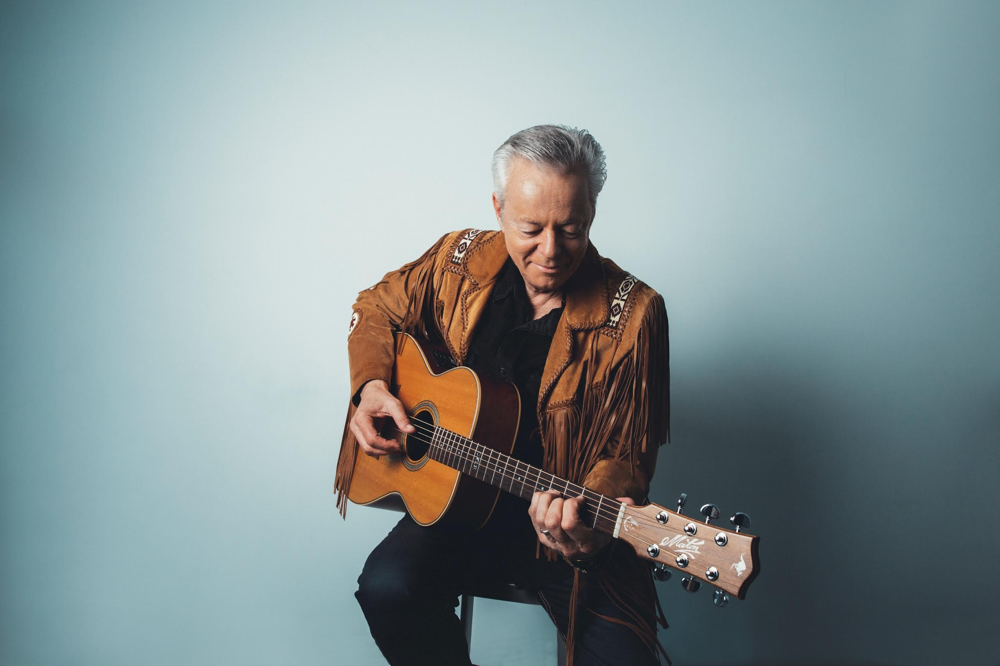
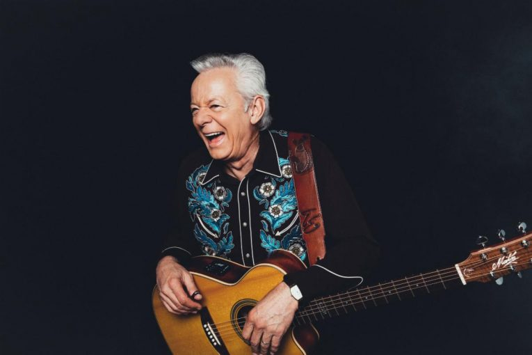
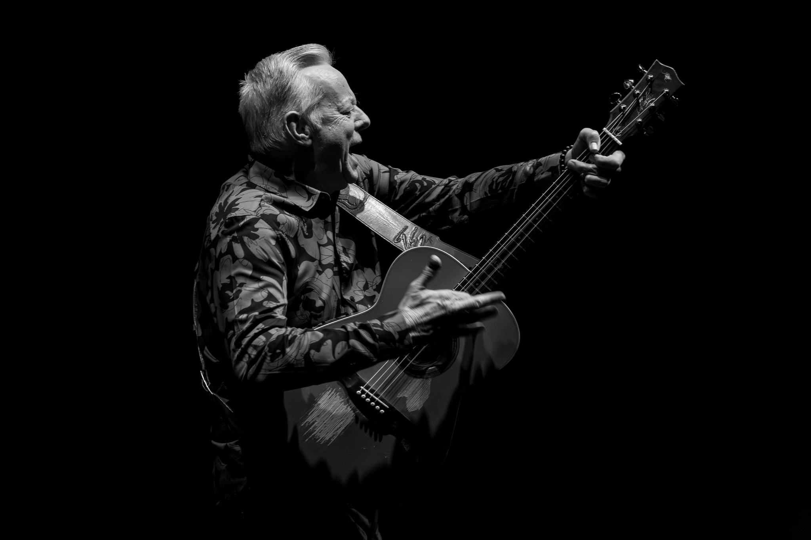
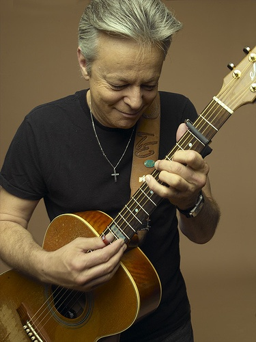
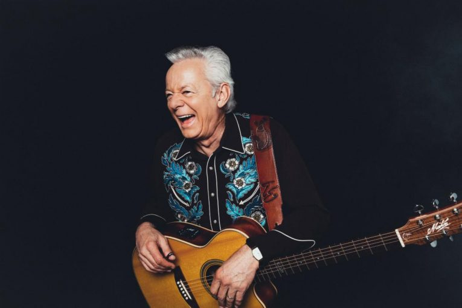
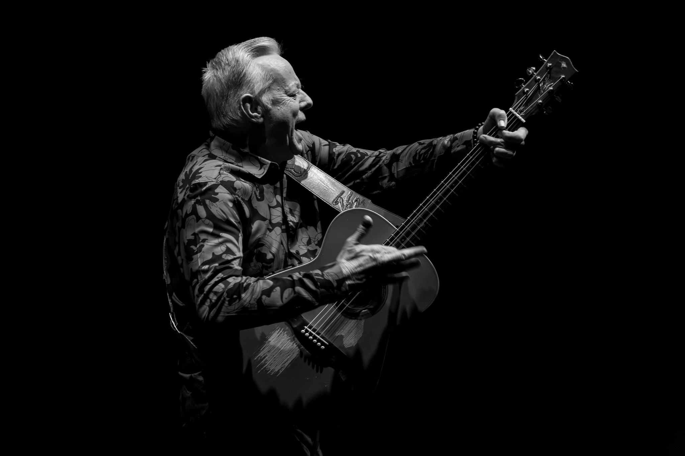
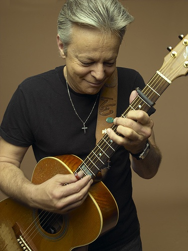
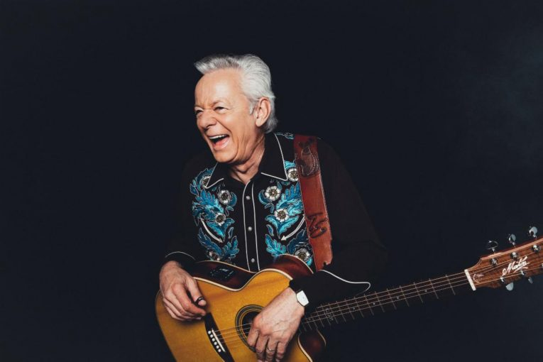
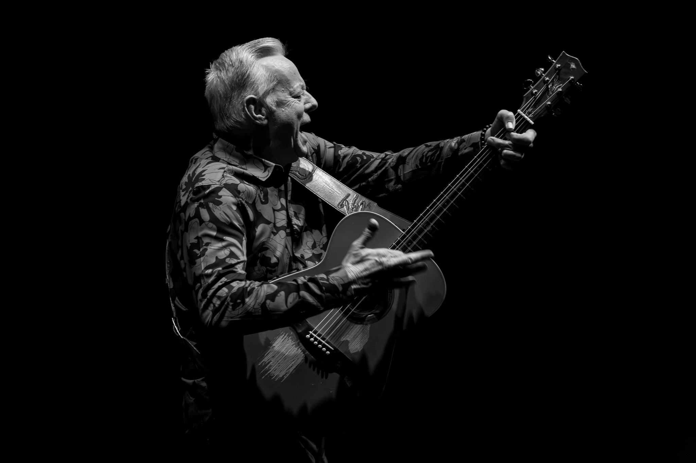
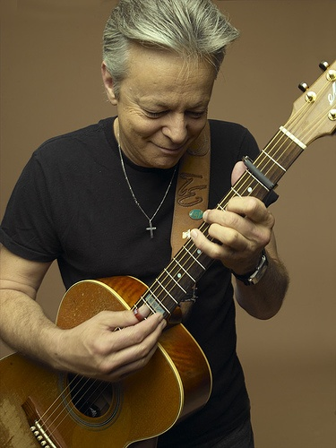

Tommy Emmanuel, CGP
Tribute Page
BIOGRAPHY

Tommy Emmanuel is an Australian guitarist, composer, and producer celebrated for his extraordinary fingerstyle technique and infectious stage presence. Often performing solo, he creates the sound of an entire band using only one guitar — blending melody, rhythm, bass lines, and percussion seamlessly. A two-time Grammy nominee and Certified Guitar Player (CGP), Tommy is admired worldwide for his precision, warmth, and joy in performance, inspiring generations of musicians to push the limits of acoustic guitar.
GALLERY

 







